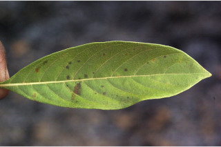
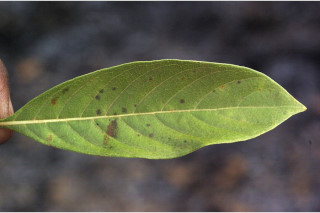

Small trees ca. 7 m tall.
ಅಂದಾಶಜು 7 ಮೀ. ಎತ್ತರದವರೆಗಿನ ಸಣ್ಣ ಗಾತ್ರದ ಮರಗಳು.
Small trees ca. 7 m tall.
சிறிய மரம் 7 மீ. உயரம் வரை வளரக்கூடியது.
Bark brown, fissured when mature; blaze reddish.
ತೊಗಟೆ ಕಂದು ಬಣ್ಣ ಹೊಂದಿದ್ದು ಬಲಿತಾಗ ಸೀಳಿಕಾ ಮಾದರಿಯಲ್ಲಿರುತ್ತದೆ;ಕತ್ತರಿಸಿದ ಜಾಗ ಕೆಂಪು ಛಾಯೆ ಹೊಂದಿರುತ್ತದೆ..
Bark brown, fissured when mature; blaze reddish.
மரத்தின் பட்டை ப்ரவுன், முதிரும் போது வலைப்பின்னல் பிளவுகளுடையது; உள்பட்டை சிவப்பு நிறமானது.
Young branchlets terete, minutely pubescent.
ಎಳೆಯ ಕಿರುಕೊಂಬೆಗಳು ದುಂಡಾಗಿರುತ್ತವೆ ಹಾಗೂ ಸೂಕ್ಷ್ಮ ಮೃದುತುಪ್ಪಳದಿಂದ ಕೂಡಿರುತ್ತವೆ.
Young branchlets terete, minutely pubescent.
சிறியநுனிக்கிளைகள் குறுக்குவெட்டுத் தோற்றத்தில் வளையமானது, நுண்ணிய உரோமங்களுடையது.
Leaves simple, ternately whorled, sometimes opposite, decussate; stipules triangular with acuminate tip, interpetiolar; petiole 0.5-0.8 cm long, planoconvex in cross section, pubescent when young; lamina 5.5-10 x 1.8-4 cm, elliptic to elliptic-lanceolate, apex acuminate, base attenuate - decurrent, margin entire, chartaceous, pubescent beneath; midrib raised above; secondary_nerves ca. 8 pairs; tertiary_nerves broadly reticulate.
ಎಲೆಗಳು ಸರಳವಾಗಿದ್ದು ಪ್ರತಿ ಸುತ್ತಿನಲ್ಲಿ ಮೂರು ಎಲೆಗಳುಳ್ಳ ಮಾದರಿಯಲ್ಲಿರುತ್ತವೆ, ಕೆಲವು ವೇಳೆ ಕತ್ತರಿಯಾಕಾರದ ಅಭಿಮುಖ ಜೋಡನಾ ವ್ಯವಸ್ಥೆಯಲ್ಲಿರುತ್ತವೆ; ಕಾವಿನೆಲೆಗಳು ಕ್ರಮೇಣ ಚೂಪಾಗುವ ಅಗ್ರವುಳ್ಳ ತ್ರಿಕೋನಾಕಾರದಲ್ಲಿದ್ದು ಎಲೆತೊಟ್ಟುಗಳ ನಡುವೆ ಇರುತ್ತವೆ;ತೊಟ್ಟು 0.5 –0.8 ಸೆಂ.ಮೀ.ವರೆಗಿನ ಉದ್ದವಿದ್ದು, ಅಡ್ಡ ಸೀಳಿದಾಗ ಸಪಾಟ ಪೀನ ಮಧ್ಯದ ಆಕಾರದಲ್ಲಿರುತ್ತದೆ, ಎಳೆಯದಾಗಿದ್ದಾಗ ಮೃದುತುಪ್ಪಳದಿಂದ ಕೂಡಿರುತ್ತವೆ;ಪತ್ರಗಳು 5.5 -10 X 1.8 – 4 ಸೆಂ.ಮೀ. ಗಾತ್ರ ಹೊಂದಿದ್ದು,ಅಂಡವೃತ್ತದಿಂದ ಅಂಡವೃತ್ತ- ಭರ್ಜಿಯವರೆಗಿನ ಆಕಾರ ಹೊಂದಿದ್ದು, ಕ್ರಮೇಣ ಚೂಪಾಗುವ ತುದಿ, ಒಳಬಾಗಿದ-ತಳಭಾಗಕ್ಕೆ ವಿಸ್ತರಿಸಿದ ಬುಡ, ನಯವಾದ ಅಂಚು ಹೊಂದಿದ್ದು ಕಾಗದವನ್ನೋಲುವ ಮೇಲ್ಮೈ ಹೊಂದಿದ್ದು ತಳಭಾಗ ಮೃದು ತುಪ್ಪಳದಿಂದ ಕೂಡಿರುತ್ತದೆ; ಮಧ್ಯನಾಳ ಪತ್ರದ ಮೇಲ್ಭಾಗದಲ್ಲಿ ಉಬ್ಬಿರುತ್ತವೆ ; ಎರಡನೇ ದರ್ಜೆಯ ನಾಳಗಳು ಅಂದಾಜು 8 ಜೋಡಿಗಳಿರುತ್ತವೆ ;ಮೂರನೇ ದರ್ಜೆಯ ನಾಳಗಳು ವಿಶಾಲ ಜಾಲಬಂಧ ನಾಳ ವಿನ್ಯಾಸದಲ್ಲಿರುತ್ತವೆ.
Leaves simple, ternately whorled, sometimes opposite, decussate; stipules triangular with acuminate tip, interpetiolar; petiole 0.5-0.8 cm long, planoconvex in cross section, pubescent when young; lamina 5.5-10 x 1.8-4 cm, elliptic to elliptic-lanceolate, apex acuminate, base attenuate - decurrent, margin entire, chartaceous, pubescent beneath; midrib raised above; secondary_nerves ca. 8 pairs; tertiary_nerves broadly reticulate.
இலைகள் தனித்தவை, மூன்று இலைகள் வட்டமைப்பிலுடையது, சிலசமயங்களில் எதிரடுக்கமானவை, குறுக்குமறுக்கானவை; இலையடிச்செதில் முக்கோணமானது மற்றும் அதிக்கூரியது, இலையடிச்செதில் இருஇலைக்காம்பிற்கு நடுவே (இண்டர்பீட்டியோலார்) உடையது; இலைக்காம்பு 0.5-0.8 செ.மீ. நீளமானது, குறுக்குவெட்டுத் தோற்றத்தில் பிளேனோகான்வக்ஸ், இளம்பருவத்தில் உரோமங்களுடையது; இலை அலகு 5.5-10 X 1.8-4 செ.மீ., நீள்வட்ட வடிவானது முதல் நீள்வட்டம்-ஈட்டி வடிவானது, அலகின் நுனி அதிக்கூரியது, அலகின் தளம் அட்டனுவேட்-டெக்கரண்ட், அலகின் விளிம்பு முழுமையானது, சார்ட்டோசியஸ், அலகின் கீழ்பரப்பு உரோமங்களுடையது; மையநரம்பு மேற்புறத்தில் அலகின் பரப்பைவிட உயர்ந்து இருக்கும்; இரண்டாம் நிலை நரம்புகள் 8 ஜோடிகள்; மூன்றாம் நிலை நரம்புகள் அகன்ற வலைப்பின்னல் போன்றவை.
Inflorescence dense terminal thyrsoid cymes; flowers whitish.
ಪುಷ್ಪಮಂಜರಿಗಳು ತುದಿಯಲ್ಲಿನ ಕದಿರಣಿಗೆ ಆಕಾರದ ಮಧ್ಯಾರಂಭಿ ಮಾದರಿಯವು;ಹೂಗಳು ಬಿಳಿ ಬಣ್ಣದವು.
Inflorescence dense terminal thyrsoid cymes; flowers whitish.
மஞ்சரி தண்டின் நுனியில் காணப்படும், அடர்த்தியாக தைரசாய்டு சைம் வகை மஞ்சரி; மலர்கள் வெள்ளை நிறமானது.
Loculicidal capsule, globose, 2-valved; seed many, small.
ಸಂಪುಟ ಫಲಗಳು ಕೋಣೆಗಳ ಬೆನ್ನು ಭಾಗದ ಮೂಲಕ ಬಿರಿಯುವ ಮಾದರಿಯಲ್ಲಿದ್ದು ಗೋಳಾಕಾರ ಹೊಂದಿದ್ದು, 2 ಕೋಶಗಳ ಸಮೇತವಿರುತ್ತವೆ;ಬೀಜಗಳ ಸಂಖ್ಯೆ ಹಲವಾರು ಇದ್ದು ಸಣ್ಣ ಗಾತ್ರ ಹೊಂದಿರುತ್ತವೆ.
Loculicidal capsule, globose, 2-valved; seed many, small.
வெடிகனி (கேப்சியூல்), அறைகள் இணையுமிடத்தில் வெடிக்க கூடியது, கோள வடிவமானது, 2-அறைகளுடையது; விதைகள் எண்ணற்றது, சிறியவை.


 
